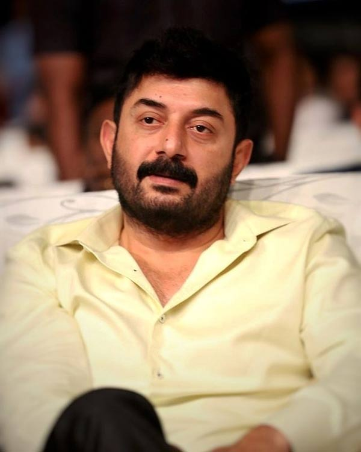

.webp "Rajinikanth")
Thalapathi (transl. Commander) is a 1991 Indian Tamil-language gangster drama film[3] written and directed by Mani Ratnam, and produced by G. Venkateswaran. The film stars Rajinikanth and Mammootty with Arvind Swamy in his feature-film debut, Jaishankar, Amrish Puri, Srividya, Bhanupriya, Shobana and Geetha in supporting roles. It is about a courageous slum dweller who befriends a powerful gangster and the attempts of a district collector to thwart them. The plot of Thalapathi is based on the friendship between Karna and Duryodhana, characters from the Hindu epic, Mahabharata. Ilaiyaraaja, in his last collaboration with Mani Ratnam, composed the film's score and soundtrack, and the lyrics were written by poet Vaali. The cinematography was handled by Santosh Sivan and the editor was Suresh Urs. Most of the filming took place in Karnataka state. With a budget of ₹3 crore, at the time of its release, Thalapathi was the most expensive South Indian film. Thalapathi was released on 5 November 1991, Diwali day; it became a critical and commercial success, and won many awards including two Filmfare Awards South: Best Director – Tamil (Ratnam) and Best Music Director – Tamil (Ilaiyaraaja), and two Cinema Express Awards: Best Actor – Tamil (Rajinikanth) and Best Character Actress (Srividya). It was remade in Kannada as Annavru (2003).
